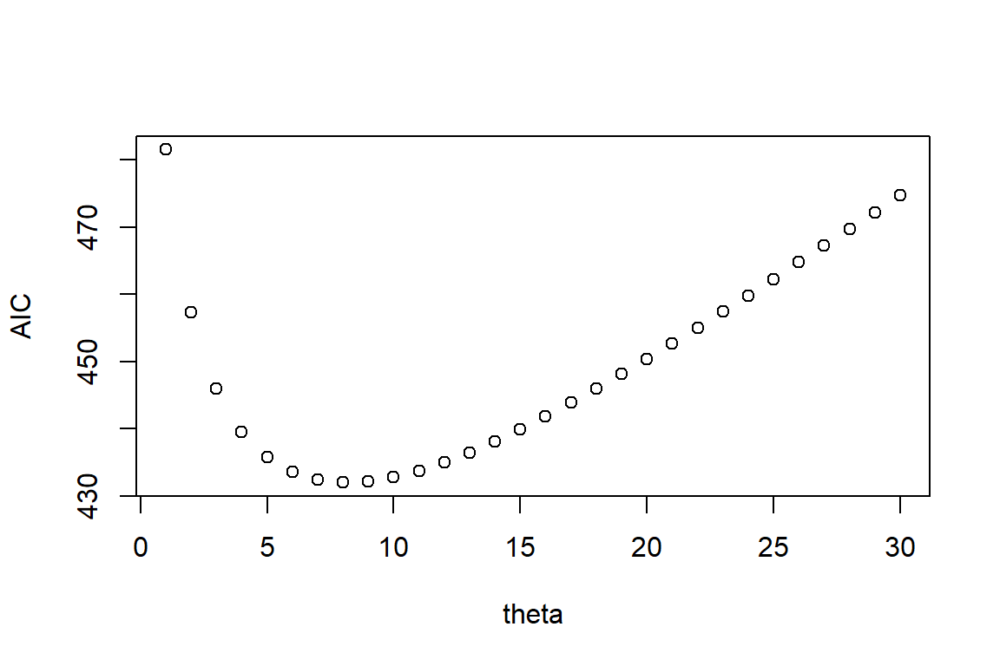

library(car) # Untuk menghitung nilai VIF
# Loading required package: carData
library(classInt) # Untuk membuat selang nilai
library(ggplot2) # Untuk visualisasi data
# Warning: package 'ggplot2' was built under R version 4.2.2
library(lmtest) # Untuk pengujian asumsi
# Loading required package: zoo
# Warning: package 'zoo' was built under R version 4.2.3
#
# Attaching package: 'zoo'
# The following objects are masked from 'package:base':
#
# as.Date, as.Date.numeric
library(spdep) # Untuk dependensi spasial
# Warning: package 'spdep' was built under R version 4.2.3
# Loading required package: spData
# To access larger datasets in this package, install the
# spDataLarge package with: `install.packages('spDataLarge',
# repos='https://nowosad.github.io/drat/', type='source')`
# Loading required package: sf
# Linking to GEOS 3.9.1, GDAL 3.4.3, PROJ 7.2.1; sf_use_s2() is TRUE
library(sp) # Untuk membentuk GWR model
library(spgwr) # Untuk membentuk GWNBR
# Warning: package 'spgwr' was built under R version 4.2.3
# NOTE: This package does not constitute approval of GWR
# as a method of spatial analysis; see example(gwr)
library(AER) # Untuk uji dispersi
# Warning: package 'AER' was built under R version 4.2.3
# Loading required package: sandwich
# Warning: package 'sandwich' was built under R version 4.2.3
# Loading required package: survival
library(MASS) # Untuk mengoptimasi parameter binomial
# Warning: package 'MASS' was built under R version 4.2.3
library(dplyr) # Untuk meringkas data koefisien
#
# Attaching package: 'dplyr'
# The following object is masked from 'package:MASS':
#
# select
# The following object is masked from 'package:car':
#
# recode
# The following objects are masked from 'package:stats':
#
# filter, lag
# The following objects are masked from 'package:base':
#
# intersect, setdiff, setequal, union
library(sf)6 Regresi Terboboti Geografis Binomial Negatif
6.1 Deskripsi
Regresi Terboboti Geografis Binomial Negatif (RTGBN) merupakan pengembangan dari model regresi binomial negatif. Model RTGBN adalah salah satu metode yang cukup efektif menduga data yang memiliki ketergantungan spasial untuk data cacah yang memiliki overdispersi. Model ini akan menghasilkan pendugaan parameter lokal dengan masing-masing lokasi akan memiliki parameter yang berbeda (Silva & Rodrigues 2014).
Model RTGBN dapat dirumuskan sebagai berikut:
\(y_i \sim \text{BN}\left(\exp\left(\sum_j \beta_j(u_i,v_i) x_{ij} \theta_i(u_i,v_i)\right)\right) \quad (6.6.1)\)
dengan \(y_i\) adalah nilai amatan respon ke-i, \(x_{ij}\) adalah nilai amatan prediktor ke-j pada pengamatan, \((u_i, v_i)\) adalah logitude dan latitude lokasi-i, \(\beta_j(u_i, v_i)\) adalah parameter regresi prediktor ke-j untuk setiap lokasi-i, dan \(\theta_i(u_i, v_i)\) adalah parameter dispersi setiap lokasi-\(i\).
Pendugaan model RTG-BN menggunakan metode kemungkinan maksimum. Langkah awal dari metode kemungkinan adalah membentuk fungsi kemungkinan sebagai berikut (Ricardo & Carvalho 2013):
\[\begin{aligned} L(\beta(u_i, v_i), \theta_i, i=1,2,\ldots,n) = \prod_{i=1}^{n} \left(\prod_{r=0}^{y_i-1} (r + \frac{1}{\theta_i})\right) \frac{1}{y_i!} \left(\frac{1}{1 + \theta_i \mu_i}\right)^{\frac{1}{\theta_i}} \left(\frac{\theta_i \mu_i}{1 + \theta_i \mu_i}\right)^{y_i} \end{aligned}\]Pengujian parameter model RTGBN terdiri dari uji serentak dan parsial. Uji signifikansi serentak menggunakan uji rasio kemungkinan maksimum (MLRT) dengan hipotesis sebagai berikut.
\[\begin{aligned} H_0: & \ \beta_1(u_i,v_i) = \beta_2(u_i,v_i) = \ldots = \beta_p(u_i,v_i) = 0 \\ H_1: & \ \text{Minimal ada satu } \beta_j(u_i,v_i) \neq 0, \ j=1,2,\ldots ,p \end{aligned}\]dengan statistik ujinya yaitu:
\(D(\hat{\beta}) = -2 \ln\left[\frac{L(\hat{\omega})}{L(\hat{\Omega})}\right] = 2\left[\ln(L(\hat{\Omega})) - \ln(L(\hat{\omega}))\right]\)
Keputusannya adalah tolak \(H_0\) jika $D() > ^2_{p,} $ dengan \(p\) adalah banyaknya parameter. Tolak \(H_0\) artinya minimal ada satu peubah yang berpengaruh signifikan terhadap model sehingga dilanjutkan dengan pengujian parsial.
Hipotesis yang digunakan untuk pengujian parameter secara parsial. Berikut hipotesis yang digunakan untuk pengujian parameter secara parsial:
\[\begin{aligned} H_0: & \ \beta_j(u_i,v_i) = 0 \\ H_1: & \ \beta_j(u_i,v_i) \neq 0 \end{aligned}\]dengan statistik ujinya dinyatakan dalam formula berikut:
\(Z = \frac{\hat{\beta}_j(u_i,v_i)}{\text{se}(\hat{\beta}_j(u_i,v_i))} \sim \mathcal{N}(0,1)\)
dengan \(\hat{\beta}_j(u_i,v_i)\) merupakan penduga parameter koefisien regresi prediktor ke-j pada lokasi ke-i dan \(\text{se}(\hat{\beta}_j)\) adalah galat baku penduga parameter koefisien regresi prediktor ke-j pada lokasi ke-i. Keputusan adalah tolak \(H_0\) jika \(|z_{\text{hit}}| > z_{\alpha/2}\)
6.2 Data
Ilustrasi untuk model RTG-BN merujuk hasil penelitian Fadila et al. (2021) tentang Tuberkulosis (TB) di Jawa Timur. Data yang digunakan merupakan data sekunder yang yang diperoleh dari Statistik Kesehatan Provinsi Jawa Timur 2019 yang dikeluarkan oleh Badan Pusat Statistik Jawa Timur, Profil Kesehatan Jawa Timur tahun 2018 dan Profil Kesehatan Jawa Timur tahun 2019 yang dikeluarkan oleh dinas kesehatan Provinsi Jawa Timur. Data yang digunakan mencakup jumlah kasus tuberkulosis dan enam peubah lainnya yang diduga berpengaruh terhadap kasus tuberkulosis (Tabel 6.6.1). Unit amatan adalah 38 kabupaten/kota yang berada di Provinsi Jawa Timur. Data dan peta ilustrasi RTG-BN tersedia pada tautan https://ipb.link/gwr-binomial-negatif.
\[ \begin{table}[ht] \centering \caption{Tabel Peubah dan Referensi} \begin{tabular}{|c|c|c|} \hline \textbf{Kode} & \textbf{Peubah} & \textbf{Referensi} \\ \hline Y & Angka Tuberkulosis per 100.000 penduduk & \\ \hline X1 & Persentase rumah tangga dengan akses sanitasi layak & Nisa’ \& Budiantara (2016) \\ \hline X2 & Persentase tempat pengolahan makanan (TPM) sehat & Lestari et al. (2014) \\ \hline X3 & Persentase rumah tangga ber-PHBS & Nisa’ \& Budiantara (2016) \\ \hline X4 & Persentase rumah sehat & Lestari et al. (2014) \\ \hline X5 & Rata-rata konsumsi batang rokok per minggu & Tandang et al. (2018) \\ \hline X6 & Persentase pengobatan lengkap kasus Tuberkulosis & Sarani (2019) \\ \hline \end{tabular} \end{table} \]
6.3 Metode Analisis
Tahapan untuk menganalisis data jumlah kasus TB di Provinsi Jawa Timur tahun 2019 dengan pendekatan RTG-BN adalah sebagai berikut:
Melakukan eksplorasi data untuk mengetahui gambaran awal data jumlah kasus TB pada balita di Provinsi Jawa Timur tahun 2019.
Membuat peta sebaran dari setiap peubah respon dan prediktor yang digunakan.
Memeriksa adanya multikolinearitas antar prediktor dengan menggunakan Variance Inflation Factor (VIF), jika nilai \(VIF_i > 10\), maka terdapat multikolinear (Kutner et al. 2005):
\(VIF_i = \frac{1}{1 - R_i^2}\)
dengan \(R_i^2\) adalah koefisien determinasi antara \(X_i\) dengan prediktor lainnya. Prediktor yang memiliki nilai \(VIF_i > 10\) tidak diikutsertakan dalam penyusunan model.
- Memeriksa overdispersi Regresi Poisson memiliki asumsi equidispersi, artinya nilai rataan dan ragam pada peubah \(Y\) bernilai sama. Penyimpangan asumsi yang sering terjadi pada regresi Poisson yaitu overdispersi, yaitu nilai ragam lebih besar dari pada nilai rataan pada peubah \(Y\). Pengujian overdispersi menggunakan nilai devians dan Khi-kuadrat Pearson yang dibagi dengan derajat bebasnya. Hipotesis yang diuji sebagai berikut:
[H_0: ] [H_1: ]
- Statistik Uji Devians:
\(\[D^2 = 2\sum_{i=1}^n \left( y_i \ln\left(\frac{y_i}{\hat{\mu}_i}\right) - (y_i - \hat{\mu}_i) \right)\]\) \(\[\phi_1 = \frac{D^2}{db}\]\)
dengan \(db = n - k\) dengan \(k\) merupakan banyaknya parameter (termasuk konstanta) model regresi Poisson, \(n\) merupakan banyaknya amatan, dan \(D^2\) adalah nilai Devians.
- Khi-kuadrat Pearson:
\(\chi^2 = 2\sum_{i=1}^n \frac{(y_i - \mu_i)^2}{\text{var}(y_i)}\) \(\phi_2 = \frac{\chi^2}{db}\)
dengan \(db = n - k\) dengan \(k\) merupakan banyaknya parameter termasuk konstanta, \(n\) merupakan banyaknya pengamatan, dan \(\chi^2\) adalah nilai Khi-kuadrat Pearson.
Jika \(\phi_1\) atau \(\phi_2\) bernilai lebih dari 1 maka terjadi overdispersi pada data. Jika tidak terdapat overdispersi maka model yang digunakan adalah model regresi Poisson, sedangkan jika terdapat overdispersi lebih cocok menggunakan model regresi binomial negatif.
-
Melakukan uji efek spasial yaitu:
- Uji dependensi spasial dengan uji LM dan Robust LM
- Uji heterogenitas spasial menggunakan uji Breusch Pagan
Menduga model regresi spasial sesuai hasil uji butir (2) dan (3). Memilih model terbaik dengan kriteria AIC.
-
Pemilihan model terbaik menggunakan Kriteria Informasi Akaike dengan rumus sebagai berikut:
\(AIC = -2\log_e(L(\hat{\theta}|\text{data})) + 2K\)
dengan \(\log_e(L(\hat{\theta}|\text{data}))\) adalah nilai maksimum pendugaan kemungkinan maksimum, \(\theta\) adalah parameter yang tidak diketahui, \(K\) adalah banyaknya parameter yang diestimasi, dan \(n\) adalah banyaknya pengamatan.
6.4 Tahapan Analisis Data dengan R
Tahap awal dalam pemodelan menggunakan R Studio adalah melakukan input data dan install package sesuai kebutuhan dalam analisis. Package diperlukan adalah:
Package
Input Data
#Set Lokasi File
# Input Data
gabung <- readRDS('data/gabung.RDS')
tb <- read.csv('data/tb_jatim.csv')
tb$KABUPATEN..KOTA <- toupper(tb$KABUPATEN..KOTA)
#
#Input peta SHP
jatim <- read_sf("data/shp/TB Jatim.shp")
sf_use_s2(FALSE)
# Spherical geometry (s2) switched off
colnames(jatim)[2:8] <- c('Y', 'X1', 'X2', 'X3', 'X4', 'X5', 'X6')
longlat = st_coordinates(st_centroid(jatim))
# Warning in st_centroid.sf(jatim): st_centroid assumes attributes are
# constant over geometries of x
# Warning in st_centroid.sfc(st_geometry(x), of_largest_polygon =
# of_largest_polygon): st_centroid does not give correct centroids for
# longitude/latitude data
jatim$Y <- as.numeric(jatim$Y)
jatim$X1 <- as.numeric(jatim$X1)
jatim$X2 <- as.numeric(jatim$X2)
jatim$X3 <- as.numeric(jatim$X3)
jatim$X4 <- as.numeric(jatim$X4)
jatim$X5 <- as.numeric(jatim$X5)
jatim$X6 <- as.numeric(jatim$X6)
head(jatim)
# Simple feature collection with 6 features and 8 fields
# Geometry type: MULTIPOLYGON
# Dimension: XYZ
# Bounding box: xmin: 111 ymin: -8.38 xmax: 112 ymax: -7.59
# z_range: zmin: 0 zmax: 0
# Geodetic CRS: WGS 84
# # A tibble: 6 × 9
# KABKOT Y X1 X2 X3 X4 X5 X6
# <chr> <dbl> <dbl> <dbl> <dbl> <dbl> <dbl> <dbl>
# 1 Pacitan 66 91.3 35 44 76.4 58 46.7
# 2 Ponorogo 133 95.1 56.4 66.8 79.7 55.6 56.3
# 3 Trenggalek 80 100 84.4 42.4 81.2 59.4 70.2
# 4 Tulungagung 119 97.3 78 43 78.8 66.1 56.5
# 5 Blitar 74 97.6 63.5 62 69.9 63.5 49.9
# 6 Kediri 120 88.6 13.2 49.6 78.7 80.9 52.3
# # ℹ 1 more variable: geometry <MULTIPOLYGON [°]>Eksplorasi Data
- Peta sebaran
Berikut syntax yang dapat digunakan untuk membuat peta sebaran:
#Menentukan batas kelas dari angka TB per 100000 penduduk
classIntervals(gabung$y, n = 4, style = 'kmeans')
# style: kmeans
# one of 497,640 possible partitions of this variable into 4 classes
# [5.83,20.6) [20.6,35.1) [35.1,50.2) [50.2,79.8]
# 28 52 49 22#Membuat peta
cc <- c('#fbb4b9', '#f768a1', '#ae017e', '#551c53')
plot.tb = ggplot(data=jatim) +
geom_sf(aes(fill = cut(Y, breaks = c(65, 104.5, 153.5, 225.5,
401))), lwd = 0.1, col ='black') +
scale_fill_manual("TB", values = cc,
labels = c("66 - 104.5", "104.5 - 153.5",
"153.5 - 225.5", "225.5 - 401"),
guide = guide_legend(reverse = T))+
xlab("") +
ylab("")
plot.tb- VIF
VIF dihitung menggunakan syntax berikut ini:
Berdasarkan nilai VIF, seluruh peubah memiliki nilai VIF < 10 sehingga dapat disimpulkan tidak terdapat multikolinearitas.
Uji efek spasial
- Indeks Moran
Untuk mengetahui efek dependensi spasial pada model regresi dengan respon ln(Y) dengan 6 (enam) prediktor (X1 sampai X6) digunakan uji Lagrange multiplier dengan syntax sebagai berikut:
#Uji Lagrange Multiplier
queenl <- poly2nb(jatim)
# although coordinates are longitude/latitude, st_intersects assumes that they are planar
queenl <- nb2listw(queenl)
summary(lm.LMtests(model, queenl, zero.policy = T,
test = c('LMlag', 'LMerr', 'RLMlag', 'RLMerr')))
# Please update scripts to use lm.RStests in place of lm.LMtests
# Rao's score (a.k.a Lagrange multiplier) diagnostics for
# spatial dependence
# data:
# model: lm(formula = log(Y) ~ X1 + X2 + X3 + X4 + X5 + X6,
# data = jatim)
# test weights: listw
#
# statistic parameter p.value
# RSerr 0.764 1 0.38
# RSlag 0.368 1 0.54
# adjRSerr 0.756 1 0.38
# adjRSlag 0.360 1 0.55Pada output di atas terlihat semua uji LM dan RLM mempunyai p-value > α=0.05, sehingga tidak terdapat dependensi spasial pada ln(Y) dan sisaan.
- Uji Breusch-Pagan
Efek keragaman spasial diuji dengan uji Breusch-Pagan dengan syntax berikut:
#Model log(Y)
bptest(model)
#
# studentized Breusch-Pagan test
#
# data: model
# BP = 15, df = 6, p-value = 0.02Hasil uji Breusch-Pagan untuk data ini menghasilkan p-value < α=0.05 yang berarti terdapat heterogenitas spasial.
- Uji Overdispersi
Untuk melakukan uji dispersi menggunakan syntax sebagai berikut:
#Model Regresi Poisson
poisson<-glm(Y~X1+X2+X3+X4+X5+X6,data=jatim, family = poisson())
#
#Nilai Deviance
dv_df<-deviance(poisson)/df.residual(poisson)
#
#Nilai Chi-Squares
pr_df<-sum(residuals(poisson,"pearson")^2)/df.residual(poisson)
#
#Overdispersi
overdis<-cbind.data.frame(dv_df,pr_df)
overdis
# dv_df pr_df
# 1 28.7 28.7Kedua nilai statistik uji overdispersi bernilai lebih besar dari satu, maka pada data TB terdapat overdispersi. Untuk menangani overdispersi pada data TB digunakan model regresi binomial negatif.
Menduga model RTBNG
- RTBNG Fixed Gaussian
#Menentukan bandwidth
bdwt.gauss.fixed <- ggwr.sel(Y ~ X1+X2+X3+X4+X5+X6, data = jatim, coords=longlat, adapt = F, gweight = gwr.Gauss)
# Bandwidth: 1.35 CV score: 249084
# Bandwidth: 2.18 CV score: 243025
# Bandwidth: 2.7 CV score: 241754
# Bandwidth: 2.79 CV score: 241604
# Bandwidth: 3.07 CV score: 241207
# Bandwidth: 3.25 CV score: 241013
# Bandwidth: 3.36 CV score: 240908
# Bandwidth: 3.42 CV score: 240848
# Bandwidth: 3.46 CV score: 240813
# Bandwidth: 3.49 CV score: 240792
# Bandwidth: 3.51 CV score: 240779
# Bandwidth: 3.52 CV score: 240771
# Bandwidth: 3.52 CV score: 240767
# Bandwidth: 3.53 CV score: 240764
# Bandwidth: 3.53 CV score: 240762
# Bandwidth: 3.53 CV score: 240761
# Bandwidth: 3.53 CV score: 240760
# Bandwidth: 3.53 CV score: 240760
# Bandwidth: 3.53 CV score: 240759
# Bandwidth: 3.53 CV score: 240759
# Bandwidth: 3.53 CV score: 240759
# Bandwidth: 3.53 CV score: 240759
# Bandwidth: 3.53 CV score: 240759
# Bandwidth: 3.53 CV score: 240759
#Optimasi Parameter Theta Binomial Negatif
aicvec <- c()
library(MASS)
for(i in 1:30){
gwnbr.gauss.fixed <- tryCatch(spgwr::ggwr(Y ~ X1 + X2
+ X3 + X4 + X5 + X6, data = jatim,
coords=longlat, bandwidth =
bdwt.gauss.fixed, gweight =
gwr.Gauss, family =
negative.binomial(theta= i, link
= "log")), warning=function(w) w)
aicvec[i] <- ifelse(is(gwnbr.gauss.fixed, 'warning'),
"not converge",
round(gwnbr.gauss.fixed$lm$aic,2))
}
matrix(aicvec, ncol = 3)
# [,1] [,2] [,3]
# [1,] 482 434 453
# [2,] 457 435 455
# [3,] 446 436 457
# [4,] 440 438 460
# [5,] 436 440 462
# [6,] 434 442 465
# [7,] 432 444 467
# [8,] 432 446 470
# [9,] 432 448 472
# [10,] 433 450 475
plot(1:30, aicvec, xlab = 'theta', ylab = 'AIC')Dalam ilustrasi ini, dilakukan optimasi parameter theta pada sebaran binomial negatif yang digunakan. Berdasarkan pemodelan RTBNG dengan nilai theta 1 sampai 30 menghasilkan algoritma yang konvergen. Nilai AIC terkecil pada theta 8 senilai 431.98. Oleh karena itu, untuk pendekatan ini digunakan theta = 8.
#Pendugaan GWR-BN
gwnbr.gauss.fixed <- spgwr::ggwr(Y ~ X1+X2+X3+X4+X5+X6,
data = jatim, coords=longlat,
bandwidth = bdwt.gauss.fixed,
gweight=gwr.Gauss, family =
negative.binomial(theta = 8, link =
"log"))
gwnbr.gauss.fixed
# Call:
# spgwr::ggwr(formula = Y ~ X1 + X2 + X3 + X4 + X5 + X6, data = jatim,
# coords = longlat, bandwidth = bdwt.gauss.fixed, gweight = gwr.Gauss,
# family = negative.binomial(theta = 8, link = "log"))
# Kernel function: gwr.Gauss
# Fixed bandwidth: 3.53
# Summary of GWR coefficient estimates at data points:
# Min. 1st Qu. Median 3rd Qu. Max. Global
# X.Intercept. 3.74054 3.81568 3.86659 3.91702 4.03409 3.84
# X1 -0.00912 -0.00904 -0.00897 -0.00893 -0.00871 -0.01
# X2 0.00475 0.00490 0.00496 0.00501 0.00510 0.00
# X3 0.00351 0.00362 0.00368 0.00375 0.00388 0.00
# X4 0.00706 0.00736 0.00747 0.00756 0.00770 0.01
# X5 0.00216 0.00296 0.00327 0.00358 0.00410 0.00
# X6 0.01449 0.01508 0.01536 0.01563 0.01597 0.02- RTBNG Adaptive Gaussian
#Menentukan Bandwidth
bdwt.gauss.adapt <- ggwr.sel(Y ~ X1+X2+X3+X4+X5+X6,
data = jatim,coords=longlat, adapt = T,
gweight = gwr.Gauss)
# Adaptive q: 0.382 CV score: 267378
# Adaptive q: 0.618 CV score: 252270
# Adaptive q: 0.764 CV score: 246676
# Adaptive q: 0.854 CV score: 244198
# Adaptive q: 0.91 CV score: 242435
# Adaptive q: 0.944 CV score: 242099
# Adaptive q: 0.947 CV score: 242087
# Adaptive q: 0.961 CV score: 241737
# Adaptive q: 0.976 CV score: 241385
# Adaptive q: 0.985 CV score: 241118
# Adaptive q: 0.991 CV score: 240978
# Adaptive q: 0.994 CV score: 240899
# Adaptive q: 0.996 CV score: 240853
# Adaptive q: 0.998 CV score: 240825
# Adaptive q: 0.999 CV score: 240808
# Adaptive q: 0.999 CV score: 240798
# Adaptive q: 0.999 CV score: 240792
# Adaptive q: 1 CV score: 240788
# Adaptive q: 1 CV score: 240786
# Adaptive q: 1 CV score: 240784
# Adaptive q: 1 CV score: 240783
# Adaptive q: 1 CV score: 240783
#
# Optimasi Parameter Theta Binomial Negatif
aicvec <- c()
for(i in 1:30){
gwnbr.gauss.adapt <- spgwr::ggwr(Y ~ X1+X2+X3+X4+X5,
data=jatim,coords=longlat, adapt =
bdwt.gauss.adapt, gweight =
gwr.Gauss, family =
negative.binomial(theta = i,
link="log"))
aicvec[i] <- gwnbr.gauss.adapt$lm$aic
}
matrix(aicvec, ncol = 3)
# [,1] [,2] [,3]
# [1,] 480 436 458
# [2,] 456 437 460
# [3,] 445 439 463
# [4,] 439 441 466
# [5,] 436 443 468
# [6,] 434 445 471
# [7,] 433 448 474
# [8,] 433 450 477
# [9,] 433 452 479
# [10,] 434 455 482
plot(1:30, aicvec, xlab = 'theta', ylab = 'AIC')
Berdasarkan nilai AIC, nilai theta = 8 menghasilkan AIC terkecil sehingga pada ilustrasi ini akan digunakan model RTBNG dengan nilai theta = 8.
gwnbr.gauss.adapt <- spgwr::ggwr(Y ~ X1+X2+X3+X4+X5+X6,
data = jatim,coords=longlat,
adapt=bdwt.gauss.adapt,
gweight=gwr.Gauss,
family = negative.binomial(theta =
8, link = "log"))
gwnbr.gauss.adapt
# Call:
# spgwr::ggwr(formula = Y ~ X1 + X2 + X3 + X4 + X5 + X6, data = jatim,
# coords = longlat, gweight = gwr.Gauss, adapt = bdwt.gauss.adapt,
# family = negative.binomial(theta = 8, link = "log"))
# Kernel function: gwr.Gauss
# Adaptive quantile: 1 (about 37 of 38 data points)
# Summary of GWR coefficient estimates at data points:
# Min. 1st Qu. Median 3rd Qu. Max. Global
# X.Intercept. 3.73400 3.79227 3.91392 4.04821 4.08655 3.84
# X1 -0.00912 -0.00903 -0.00885 -0.00868 -0.00852 -0.01
# X2 0.00471 0.00475 0.00491 0.00503 0.00510 0.00
# X3 0.00320 0.00337 0.00347 0.00372 0.00389 0.00
# X4 0.00700 0.00709 0.00742 0.00762 0.00771 0.01
# X5 0.00164 0.00190 0.00274 0.00361 0.00414 0.00
# X6 0.01425 0.01467 0.01541 0.01586 0.01607 0.02- Perbandingan nilai AIC
Berikut syntax untuk memperlihatkan perbandingan AIC dari setiap model:
Berdasarkan nilai AIC, model dengan bandwidth fixed gaussian memiliki nilai AIC yang sama dengan model dengan bandwidth adaptive gaussian sehingga model terbaik yang lebih sederhana untuk data ini adalah model dengan bandwidth fixed gaussian.
Interpretasi
Interpretasi model RTBNG dapat dilakukan dengan mengelompokkan koefisien model berdasarkan metode clustering tertentu. Dalam ilustrasi ini, dilakukan pengelompokan koefisien menggunakan kmeans.
#Koefisien model
hasil <- as.data.frame(gwnbr.gauss.fixed$SDF)
hasil$KABKOT <- jatim$KABKOT
gabung_new <- merge(jatim, hasil, by= 'KABKOT', all=T)
#
#Standarisasi koefisien
clustdt<- scale(as.data.frame(gabung_new[,10:16])[,1:7])
#
#K-means clustering dengan 4 cluster
set.seed(123)
kcluster <- kmeans(clustdt, centers = 4)
gabung_new$cluster <- kcluster$cluster
#
#Plot Cluster
ggplot(gabung_new) +
aes(fill = factor(cluster)) +
geom_sf(size = 0.05) +
scale_fill_brewer("Cluster", palette = 'Set2')+
xlab("") +
ylab("")Nilai rataan dari setiap gerombol dapat diperoleh dengan menggunakan syntax berikut ini:
#ringkasan pusat gerombol
gabungdf <- as.data.frame(gabung_new)
gabungdf %>% select(cluster, X.Intercept., X1.y, X2.y, X3.y,
X4.y, X5.y, X6.y) %>% group_by(cluster) %>% summarise_each(funs(mean))
# Warning: `summarise_each_()` was deprecated in dplyr 0.7.0.
# ℹ Please use `across()` instead.
# ℹ The deprecated feature was likely used in the dplyr package.
# Please report the issue at
# <https://github.com/tidyverse/dplyr/issues>.
# Warning: `funs()` was deprecated in dplyr 0.8.0.
# ℹ Please use a list of either functions or lambdas:
#
# # Simple named list: list(mean = mean, median = median)
#
# # Auto named with `tibble::lst()`: tibble::lst(mean, median)
#
# # Using lambdas list(~ mean(., trim = .2), ~ median(., na.rm =
# TRUE))
# # A tibble: 4 × 8
# cluster X.Intercept. X1.y X2.y X3.y X4.y X5.y
# <int> <dbl> <dbl> <dbl> <dbl> <dbl> <dbl>
# 1 1 3.99 -0.00884 0.00481 0.00355 0.00719 0.00248
# 2 2 3.84 -0.00901 0.00498 0.00372 0.00751 0.00342
# 3 3 3.91 -0.00893 0.00491 0.00363 0.00737 0.00300
# 4 4 3.77 -0.00907 0.00506 0.00382 0.00764 0.00387
# # ℹ 1 more variable: X6.y <dbl>Dari output terlihat urutan rataan koefisien X1 dari terkecil sampai terbesar berturut-turut pada gerombol 4, gerombol 2, gerombol 3, dan gerombol 1. Sebaliknya urutan koefisien untuk X2 sampai X6 dari terkecil sampai terbesar berturut-turut pada gerombol 4, gerombol 2, gerombol 3, dan gerombol 1.